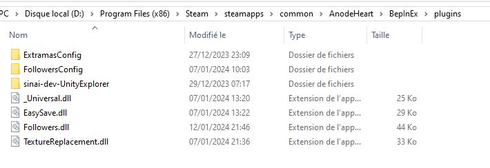

Download mods below which are .dll and put them on the Chaos Galaxy 2\BepInEx\plugins.

- Download the latest plugin (.dll)
- This plugin will let you easily replace portrait.
- Launch the game one time to let the Plugin set up the configuration.
- On the Sprites page, you will have some examples
- Download them then unzip the content on the Chaos Galaxy 2\ModAssets\Replacements
- Can be safely removed. Do not break your save